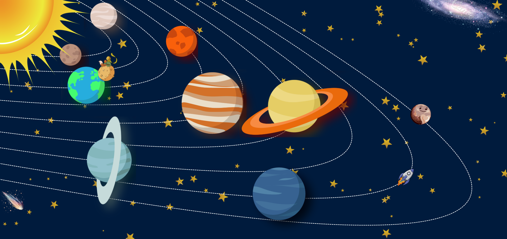
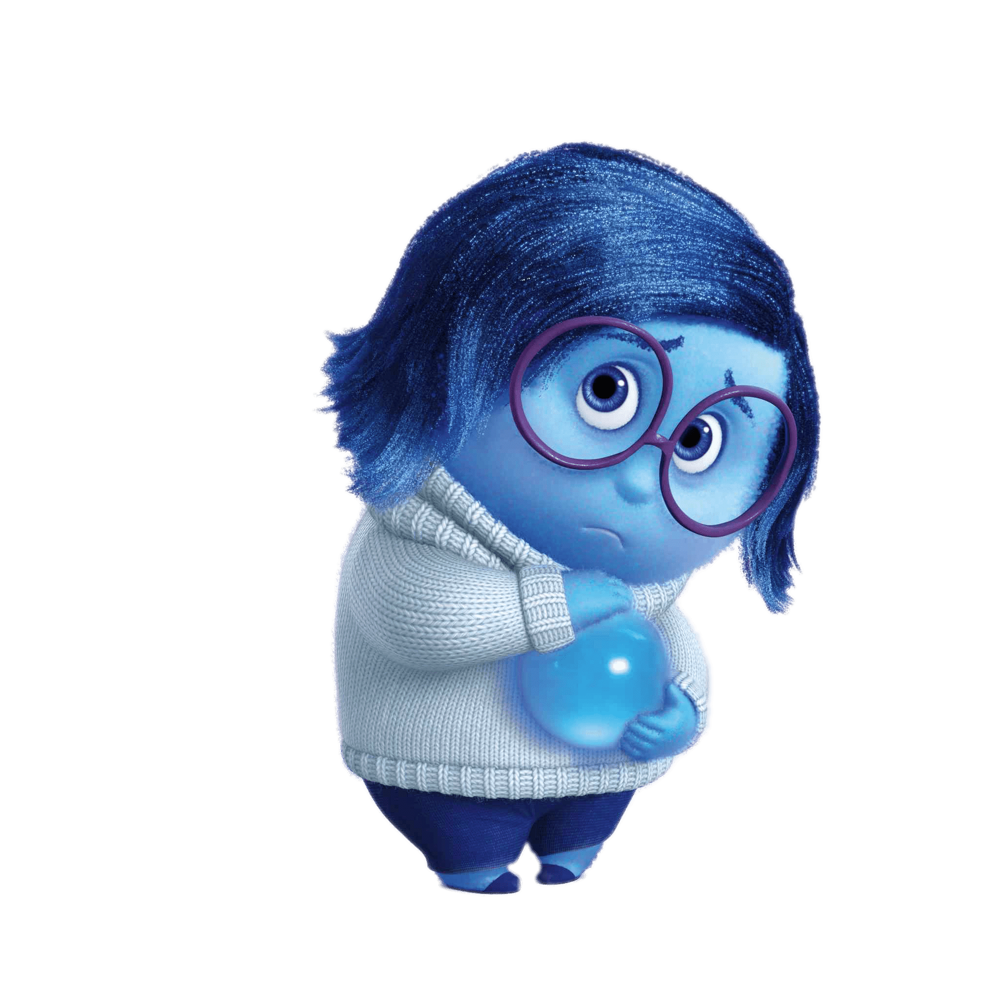

🌟 EXCELENTEEEE, mi amor! Has contestado correctamente todas las preguntas de este gran viaje.
Cada planeta es un pasito y recuerdo de nuestro amor... y tú brillaste en cada uno. Te amo siempreee, mi lunita hermosa 🚀💖